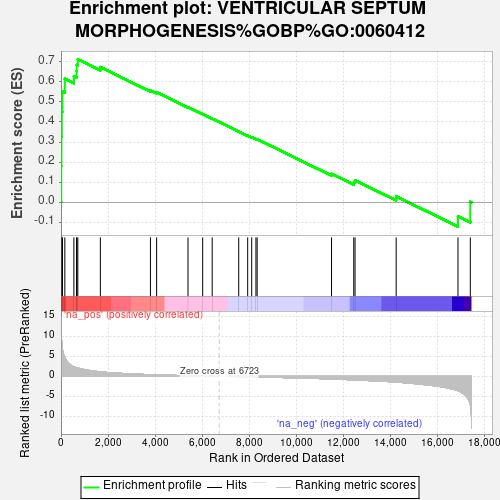
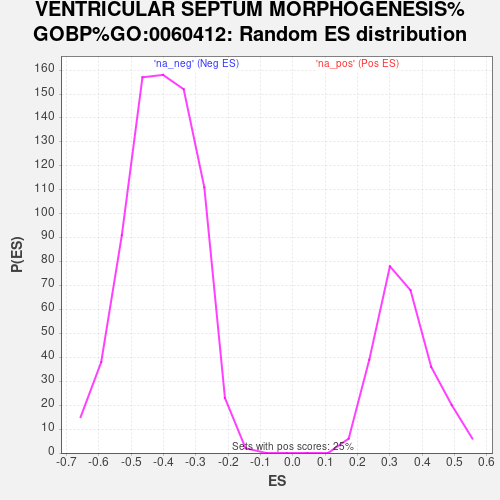

| Dataset | gene_ranks |
| Phenotype | NoPhenotypeAvailable |
| Upregulated in class | na_pos |
| GeneSet | VENTRICULAR SEPTUM MORPHOGENESIS%GOBP%GO:0060412 |
| Enrichment Score (ES) | 0.7115683 |
| Normalized Enrichment Score (NES) | 2.0742354 |
| Nominal p-value | 0.0 |
| FDR q-value | 0.0046070083 |
| FWER p-Value | 0.111 |

| SYMBOL | RANK IN GENE LIST | RANK METRIC SCORE | RUNNING ES | CORE ENRICHMENT | |
|---|---|---|---|---|---|
| 1 | NOG | 9 | 12.570 | 0.1816 | Yes |
| 2 | FGFR2 | 19 | 10.081 | 0.3271 | Yes |
| 3 | SMAD7 | 34 | 8.656 | 0.4518 | Yes |
| 4 | HEY1 | 62 | 6.987 | 0.5514 | Yes |
| 5 | BMPR1A | 163 | 4.790 | 0.6151 | Yes |
| 6 | HES1 | 549 | 2.405 | 0.6279 | Yes |
| 7 | BMPR2 | 663 | 2.168 | 0.6528 | Yes |
| 8 | HEY2 | 669 | 2.160 | 0.6838 | Yes |
| 9 | TGFBR1 | 715 | 2.095 | 0.7116 | Yes |
| 10 | SOX4 | 1674 | 1.141 | 0.6732 | No |
| 11 | SLIT3 | 3805 | 0.447 | 0.5575 | No |
| 12 | ZFPM2 | 4068 | 0.385 | 0.5480 | No |
| 13 | ACVR1 | 5402 | 0.161 | 0.4739 | No |
| 14 | PROX1 | 6027 | 0.078 | 0.4393 | No |
| 15 | SMAD4 | 6431 | 0.030 | 0.4166 | No |
| 16 | HEYL | 7560 | -0.039 | 0.3525 | No |
| 17 | CITED2 | 7941 | -0.083 | 0.3319 | No |
| 18 | SOX11 | 8112 | -0.103 | 0.3236 | No |
| 19 | TGFB2 | 8292 | -0.127 | 0.3152 | No |
| 20 | SLIT2 | 8343 | -0.133 | 0.3142 | No |
| 21 | BMP4 | 11508 | -0.624 | 0.1418 | No |
| 22 | NOTCH1 | 12454 | -0.850 | 0.0999 | No |
| 23 | ROBO1 | 12508 | -0.865 | 0.1094 | No |
| 24 | ZFPM1 | 14257 | -1.402 | 0.0295 | No |
| 25 | TGFBR3 | 16887 | -3.558 | -0.0697 | No |
| 26 | ROBO2 | 17411 | -7.081 | 0.0029 | No |
